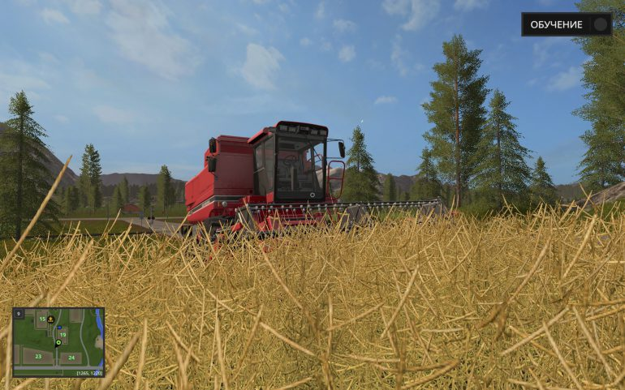

Farming Simulator-серия видеоигр для разных
игровых платформ, разработанных компанией
Giants Software. Основной жанр игр
серии – симулятор фермерской деятельности. Последняя игра
серии (на февраль 2017), Farming Simulator 17, вышла
24 октября 2016 года и стала самой успешной игрой в серии.
Всего за месяц с релиза было продано более миллиона
копий игры.

Farming Simulator 2017
Год выпуска: 25 октября 2016 г.
Жанр: Simulator, 3D
Разработчик: Giants Software
Издатель: Focus Home Interactive
Платформа: РС
Тип издания: Repack
Язык интерфейса: Русский
Язык озвучки: Английский
Таблэтка: Вшита (RELOADED)
Системные требования:
Операционная система: Windows 7, 8. 10
Процессор: 2.0 GHz Intel or equivalent AMD dual-core processor
Оперативная память: 2 Гб
Видеокарта: Nvidia Geforce GTS 450 Series, AMD Radeon HD 6770
Звуковая карта: DirectX® 9.0с
Свободное место на жестком диске: 9,5 гб
Скачать игру